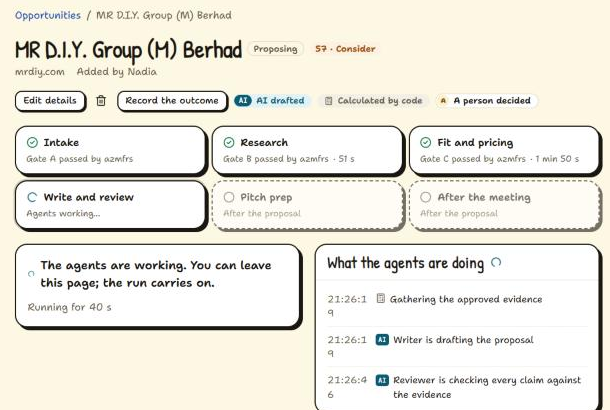
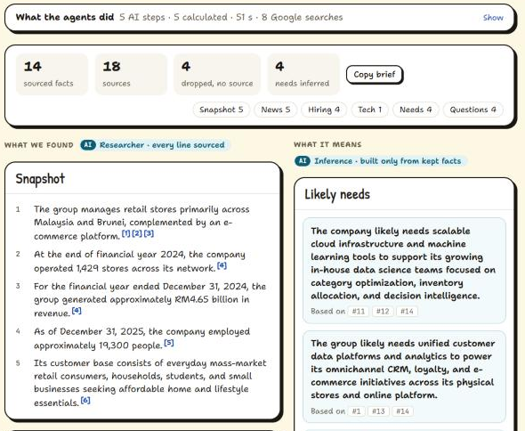
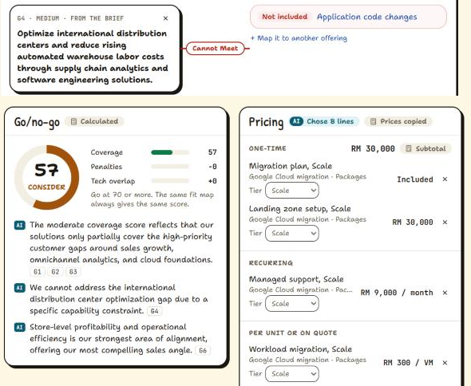
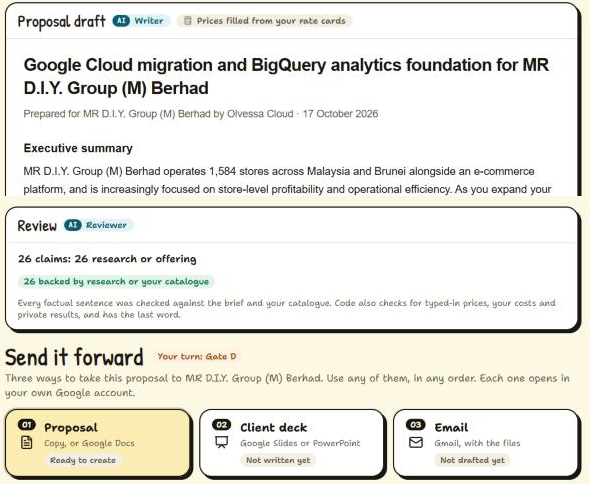
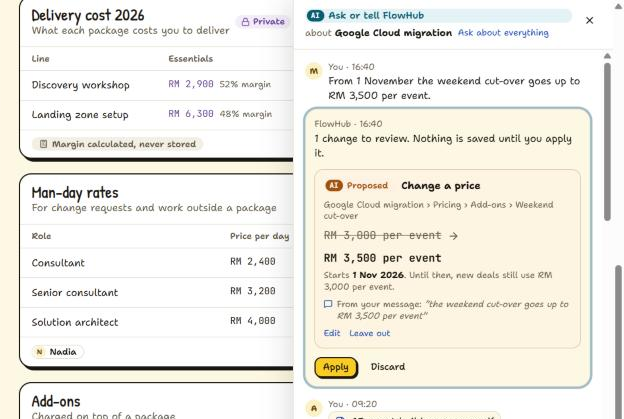

Theme 5 · Future of Work & Enterprise Productivity
FlowHub
Everything your company sells, in one place. Turned into cited, priced proposals by Gemini. You approve every step.
FlowHub is the hub for everything a company sells, with a team of Gemini agent roles built in. Staff keep their offerings, prices, results, partners and selling rules in one place, each item linked to the document page it came from, and keep it current by telling FlowHub what changed in a sentence or a PDF. When a lead arrives, from the news, an email, a tender or a website, agent roles research the prospect with cited sources, map its needs to the company's own offerings, price the fit from the company's rate cards, and write and review the proposal. The proposal goes out as a Google Doc, a client deck and a Gmail draft, followed by pitch prep and next steps from the meeting notes. A person approves every stage, and every rule that keeps the AI honest is enforced in code.
10agent roles, orchestrated in code, with a person at every gate
48/48prices in eval drafts traced to a rate-card cell or fee line
9/9planted unsupported claims caught by the Reviewer
0cost amounts in any eval draft

The deal room on the live prototype: three gates passed, the go/no-go score calculated in code, and the Writer and Reviewer working, each step marked AI or Calculated.
Problem statement category: Future of Work & Enterprise Productivity · Date: 18 October 2026 Built with: Gemini 4 Argon and Gemini 3.8 Flash on Gemini Enterprise Agent Platform · Next.js on Cloud Run · Firestore · Cloud Storage · Cloud Tasks · Firebase Auth · Google Docs, Slides and Gmail Live prototype: flowhub-331382621697.asia-southeast1.run.app (sign in with Google, then Try with sample data)
Every sample company, person and price is fictional; prospects are real companies, researched from public sources only.
1. The problem
Every company that sells repeats the same six jobs for every lead: find the lead, research them, find the fit, price and propose, prep the pitch, and follow up. Most teams still do them from scratch: twenty browser tabs, last quarter's proposal copied and retyped, the fit worked out in one person's head, the pitch prep skipped, next steps lost in a notebook.
Underneath all six sits job zero: knowing what you sell. The current price, the right case study and whether the company can even take the job live in old decks, a rate-card spreadsheet, past proposals and people's heads. When that knowledge is wrong or out of date, every job above it is wrong too, and it leaves with the people who leave.
Selling time is scarce. Salesforce's State of Sales research (5th edition) found that sales reps spend only 28% of their week actually selling. In SMEs, startups and specialist firms the people who sell also deliver the work, with no bid team and no sales operations, so the preparation competes with billable hours and offers go out generic.
Why today's tools don't solve it
Approach
What it does well
What's missing
By hand spreadsheets, decks, tabs
Flexible, no new software
Hours per deal. Knowledge lives in people, not in a shared record.
A tool per job CRM, prospecting, proposal, RFP and call-note tools
Each job done well on its own
Separate logins and bills, built for large sales teams. None holds a structured, sourced record of what the company sells and prices.
Chat assistants general-purpose GenAI chat
Fast drafting and research
Knows the internet, not the company's catalogue. Prices and claims can be made up, sources are optional, context is pasted in every time, and the work stays in one person's chat.
FlowHub
One trusted record of what the company sells, and agent roles that work from it through all six jobs: every research claim cited, every price copied from the catalogue by code, every stage approved by a person, and the whole team working from the same hub.
How FlowHub answers Theme 5
The theme asks for
What FlowHub delivers
Helping individuals and organizations
One shared hub for the company; each seller gets a bid team's preparation for every deal.
Better ways to access knowledge
The offering graph: offerings, prices, results, partners and rules as typed data, each linked to its source page. Ask a question in plain words and get an answer cited to the catalogue, with totals calculated in code.
Better ways to collaborate
Anyone tells FlowHub what changed; it proposes the edit in the right tab and a person applies it. Every block shows who did it: the AI, a calculation in code, or a named person.
Better ways to make decisions
A fit map with "Cannot meet" said out loud, a go/no-go score computed by formula, company selling rules enforced in code, and news leads scored in code.
Better ways to complete everyday work
The real deliverables: a proposal in Google Docs, a client deck in Google Slides or PowerPoint, an email ready in Gmail, pitch prep with practice, and next steps from meeting notes.
Gains in productivity, efficiency, knowledge accessibility and workflow execution
The six jobs run as one flow in one place: from a lead to a reviewed, priced proposal in one sitting, with nothing retyped between steps.
2. What FlowHub does
The hub: know what you sell
Each offering has one page with six tabs: Overview, Scope, Pricing, Partners, Sales material and Notes. Behind the pages is a typed offering graph: offerings and features, rate cards whose rows and columns are data, fee schedules, results marked public or not, exclusions and company-wide selling rules, partners, and technology. Every entity records where it came from (a document page, a message, an import or a hand edit) and who confirmed it, so a source chip opens the exact page and quote. Cost cards and buy prices are visible to the team for margins and never reach a model or a generated document. Everything can be edited by hand, and deletes go to a recycle bin.
Ask or tell: keep it current
A box on every screen (Ctrl+J) takes a sentence or a PDF. "From 1 November the weekend cut-over goes up to RM 3,500 per event" becomes one proposed change on that price line, with its start date. "Met Farah at Anjung Serai Living today…" becomes a proposed opportunity with the contact and next meeting. A brochure PDF, even a scanned one, becomes proposed features, prices and results, each citing its page. Nothing changes until a person presses Apply. Questions get answers cited to the catalogue: "What's our Growth price for 80 VMs?" copies the line from the rate card, and code calculates 80 × RM 380 = RM 30,400.
Find the lead
Leads come in four ways: paste an email or invite, attach an RFP or tender (PDF, image or saved email), enter a company website, or read today's paper. The news scout runs four Google Search grounded searches built from the hub (the industries served, the offerings, the local market, tenders and regulation) and lays the results out as a newspaper. Code keeps only sourced sentences, drops companies that break a selling rule or are already in the pipeline, and scores each lead. A person opens a deal from a story.
The deal room: four stages, four gates
Stage
What the agent roles do
The person's gate
Intake
Read the email, invite, PDF or website and extract the company, contacts and requirements, with the PDF page of each.
A: confirm the prospect, so research never runs on the wrong company
Research
Snapshot, news and hiring searches run in parallel with Google Search grounding; the prospect's site is read with URL context; likely needs are inferred only from kept facts.
B: approve the brief; remove any claim
Fit and pricing
The Fit Analyst maps each need to an offering, including "Cannot meet", with customisations and public proof. Pricing picks rate-card lines by function call.
C: change any fit, add a need, re-map or re-tier; the score is recalculated in code
Write and review
The Writer drafts the proposal with price placeholders; the Reviewer checks every claim, with up to two revision loops.
D: decide any flagged claim, then send it forward
After the proposal
Send it forward three ways: the proposal as a Google Doc in the user's own Drive, an 8-slide client deck in Google Slides or as a .pptx, and a filled-in Gmail draft with the files linked. FlowHub never sends anything; the person presses Send.
Pitch prep: a pitch on a page, the questions the client will likely ask with suggested answers, and questions to ask them. The seller can practise an answer and get a mark out of 10; an amount that isn't an approved price is flagged by code and caps the mark.
After the meeting: paste rough notes and get next steps checked against the hub, such as a supplier ask addressed to the right partner, with short emails ready for Gmail. Every point must quote the notes word for word.
Outcome: record won, lost or no decision with a reason. Won clients shape what the news scout looks for next.
Three kinds of seller, one engine
Sample seller (fictional)
Sells
How its catalogue is priced
Olvessa Cloud, Kuala Lumpur, 14 staff
Services
Packages by tier, man-day rates and add-ons, with private delivery cost
Yorvex Workforce, Penang, 86 staff
Software
Editions per employee per month, a USD price list, onboarding and project fees; roadmap features kept apart
Trassoq Hardware, Shah Alam, 140 staff
Products
Volume bands with a private buy price, leasing per device per month, managed print per page
The same agent roles and proposal template serve all three. A judge can switch between them from the sidebar and run the full flow on each.
One real deal, end to end
The figures below come from a live run on the deployed prototype, for Olvessa Cloud and a real prospect, MR D.I.Y. Group (M) Berhad, researched only from public sources.

Research brief. 14 facts from 18 sources, cut from Google Search grounding. 4 sentences with no source were dropped and counted. Inferred needs cite the facts they rest on.

Fit map, score and pricing. One need is marked "Cannot meet". The score is a formula (57, Consider). Pricing picked 8 lines; code copied every price.

Draft and review. 26 of 26 claims backed by research or the catalogue, then three ways forward: Google Doc, client deck and Gmail.

Ask or tell. A sentence becomes one proposed price change, with its start date and the words it came from. It waits for Apply. Cost columns beside it stay private.
Who did what, everywhere. Every block in FlowHub carries a marker: AI for model output, Calculated for code, or a person's name. The agent's output is never edited; people edit a working copy that is locked at the gate, so what the AI wrote and what a person changed are always both on record.
3. How Gemini is used
FlowHub is a GenAI workflow, not a chat window. Each stage is a TypeScript pipeline of named steps; each step is marked as AI or Calculated, and its progress streams live to the deal room. Agent roles are named steps, orchestrated in code, with a person at every gate. Every model call gets only its instruction and the inputs that code loaded from Firestore, never a chat history. Answers that code acts on come back as structured output, validated against the same Zod schemas the app uses; grounded searches come back with their grounding metadata, which code cuts into claims.
Never guesses a company; checks each cited PDF page
Researcher
FlashArgon
Google Search grounding, URL context
Snapshot, news and hiring signals; technology seen on their site; likely needs
Claims cut from grounding metadata; unsourced sentences dropped and counted; needs must cite kept facts
Fit Analyst
Argon
Structured output, whole confirmed catalogue in context
Maps needs to offerings, with customisations and "Cannot meet"
Exclusions and selling rules first; every reference validated; score by formula
Pricing
Flash
Function calling
Reads the rate cards and picks line references
Copies the price text; does every sum; never sees cost
Writer
Argon
Structured output
Drafts the proposal from the approved fit and brief
Fills {{price:…}} placeholders from the catalogue
Reviewer
Argon
Structured output, up to 2 revision loops
Checks every claim against the research and the catalogue
Hard checks for typed prices, cost leaks, private results and roadmap-only claims; code has the last word
Deck writer
ArgonFlash
Structured output
Restates the proposal as an 8-slide deck; picks open-licence photos
Drops any line with no proposal claim behind it; credits every photo
Coach
ArgonFlash
Structured output
Pitch on a page, likely questions, marks practice answers
Checks every amount against approved prices
Planner
Argon
Structured output
Turns meeting notes into next steps and emails
Each point must quote the notes; partners come from the hub
Models: Gemini 4 Argon (Pro tier) where reasoning matters, Gemini 3.8 Flash where speed matters. Both are called through the Gen AI SDK (@google/genai) on Gemini Enterprise Agent Platform with the Cloud Run service identity, and their names are pinned in one file.
Why the AI is load-bearing, and still trustworthy
The model never types a price. Pricing selects line references by function call; the Writer leaves placeholders; code copies the price text and does every sum.
No source, no claim. Research claims are cut from Google Search grounding metadata in code. Google's Search Suggestions are shown unchanged, and source links are kept exactly as returned.
The catalogue is the AI's memory. Agents read only entities a person confirmed. Everything they suggest is a proposal until someone applies it.
The person stays in charge. Four gates per deal, an Apply button on every hub change, and any gate can be reopened or a stage re-run.
4. Trust, enforced in code
Rule
Where it is enforced
Research claims have a source
Claims cut from grounding metadata; inferences must cite kept claims
Prices come only from the catalogue
Pricing selects references; code copies values; Writer placeholders; a proposed price must appear word for word in its source
Cost never leaves the seller
Typed projections with no cost fields; a cost-string hard check on every draft
Only public results are cited
Proof projection plus a non-public-name hard check
Unsupported claims block the document
Reviewer, hard checks, and the finalise action's own check
Roadmap is never sold as available
A claim resting only on a planned feature goes to a person at Gate D
Scores and selling rules are code
Go/no-go is a formula; a selling-rule break holds the deal at No-go
Agents read only confirmed data
Proposals live outside the graph until a person applies them
Workspaces are isolated
Path-scoped collections, security rules that deny every client write, server checks on every read
Google tokens are never stored
A narrow drive.file token, used once when the Doc or deck is created; no Gmail permission at all
Evaluation on real Gemini runs
npm run eval runs the real pipelines against Gemini on six opportunities across the three sellers and six Ask or tell messages. Results on 16 October 2026:
Check
Result
Target
Prospect identified
6 / 6
90%
Need mapped to the expected offering
31 / 32
80%
Selling-rule and scope conflicts caught
7 / 7
100%
Prices traced to a rate-card cell or fee line
48 / 48
100%
Calculated totals correct
11 / 11
100%
Planted unsupported claims flagged by the Reviewer
9 / 9
100%
Drafts with a cost amount
0 / 6
0
Non-public results cited
0 / 12
0
Ask or tell messages giving exactly the expected changes
6 / 6
5 of 6
One eval message plants a percentage price rise ("put it up by 10%"). No price change reaches Apply, because the person never wrote the new price. In addition, 255 unit tests cover the trust checks, the price parser and the schema, and GitHub Actions runs lint, type checks, the tests and a schema-drift check on every push.
5. Architecture on Google Cloud
Figure 1. FlowHub on Google Cloud. One Cloud Run service serves the app and runs every pipeline; long stages go through Cloud Tasks; Firestore is the system of record; only server code calls Gemini.
One stage, end to end
A person passes a gate. The server action checks, in one Firestore transaction, that the stage isn't running, the earlier stage is approved and the daily caps allow it; it creates the run and queues it in Cloud Tasks.
Cloud Tasks calls the internal route with an OIDC token and the IDs only. The pipeline reads the approved working copy and the confirmed catalogue from Firestore.
Each step writes a progress event marked AI or Calculated; the browser's Firestore listener shows it live. Model steps call Gemini; code steps check, copy and score.
The run writes the agent's output and a working copy for people to edit, sets the stage to waiting, and ends. Nothing is kept in memory between stages, and a repeated task for the same run exits without doing anything.
All ten agent roles, through the Gen AI SDK, with Google Search grounding, URL context, file understanding, structured output and function calling
Cloud Run
The Next.js app and every pipeline in one service, scaling to zero
Cloud Tasks
Queues each deal-room stage and each PDF read, with safe retries
Firestore
The offering graph, deal rooms, live progress events, proposals, caps and the audit trail
Cloud Storage
Uploaded PDFs, read by Gemini directly
Firebase Auth
Google sign-in
Cloud Build, Artifact Registry
Builds and deploys the container
Google Docs, Slides and Gmail
The proposal and client deck in the user's own Drive; a Gmail compose window the person sends
6. Scale and sustainability
Scales by design
Every stage is a stateless run: it reads Firestore, writes back and ends, so the pipelines can move to a separate worker service with a deploy change, not a rewrite.
Cloud Run scales to zero and out on demand; Cloud Tasks absorbs long stages and retries safely.
Workspace isolation on every read; the browser never writes, and security rules deny it.
A new seller is data, not code: the same agents serve services, software and products. The offering graph imports and exports as a versioned JSON Schema generated from the same Zod schema Gemini's structured output uses.
Sustainable to run
Daily caps per company (60 AI runs, 20 research runs) and a ceiling across all companies (1,500 and 400), so open access can't exhaust the budget.
A kill switch in Firestore pauses every agent without a redeploy; a budget alert watches the project.
Flash where speed matters and Argon where reasoning does, so each call costs only what it needs.
Model names live in one file, and the eval set on real Gemini runs checks a model change before it ships.
It compounds. Every document, note and won deal goes back into the hub. The news scout looks for more clients like the ones a company won, and the notes summary learns what sells and what loses deals.
7. How FlowHub meets the judging criteria
Criterion
Evidence in the prototype
Technical merit and GenAI implementation (40%)
Ten agent roles across the whole journey, each using the Gemini capability that fits: Google Search grounding, URL context, file understanding of PDFs and scans, structured output and function calling. Two models chosen per step. Trust rules enforced in code and proven by an eval on real Gemini runs and 255 unit tests. Deployed and running on Google Cloud.
Problem alignment and impact (25%)
Targets the six jobs every seller repeats, and the knowledge problem beneath them, for companies without a bid team. The seller gets a bid team's preparation; the company keeps one trusted record of what it sells; clients get proposals that answer their real needs, with sources they can check.
Innovation and creativity (25%)
The company's own sourced catalogue as the AI's memory; a model that never types a price; claims cut from grounding metadata in code; who-did-what markers on every block; and leads that arrive as a scored newspaper of sourced stories.
User experience and solution design (10%)
One hub with record pages, Ask or tell from any screen, live progress, approval gates instead of black-box automation, real Google files as outputs, and a sample company ready in one click.
8. Try it in five minutes
Open the live prototype and sign in with Google. Google shares only the name and email.
Press Try with sample data and pick Olvessa Cloud. MR D.I.Y. is waiting at Gate A.
Press Research this prospect and watch a cited brief build live, then approve each gate through fit, pricing and a reviewed proposal.
Press Ctrl+J and tell FlowHub a price changed, or switch to Yorvex Workforce or Trassoq Hardware from the sidebar.